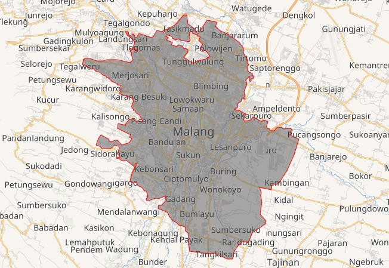

Kota Malang adalah kota terbesar kedua di Jawa Timur setelah Surabaya, dan kota terbesar ke-12 di Indonesia. Kota ini didirikan pada masa Pemerintahan Belanda pada tanggal 1 April 1914, yang dimana E.K Broeveldt sebagai wali kota pertama,Kota Malang dikenal baik sebagai Kota Pendidikan. Kota ini memiliki berbagai perguruan tinggi terbaik seperti Universitas Brawijaya, Universitas Negeri Malang, UIN Maulana Malik Ibrahim Malang, dan Politeknik Negeri Malang. Selain itu, kota ini merupakan kota pariwisata karena alamnya yang menawan yang dikelilingi oleh pegunungan serta udaranya yang sejuk.
Geografi

Bagian-bagian Kota Malang memiliki kekhasan sendiri sehingga memiliki kecocokan tersendiri dalam berbagai aktivitas. Bagian selatan Kota Malang merupakan dataran tinggi yang cukup luas sehingga cocok untuk industri; bagian utara merupakan dataran tinggi yang subur sehingga cocok untuk pertanian; bagian timur merupakan dataran tinggi dengan keadaan kurang subur; dan bagian barat merupakan dataran tinggi yang amat luas dan kini menjadi daerah pendidikan. Kota Malang dilalui oleh Sungai Brantas yang mata airnya terletak di lereng Gunung Arjuno di sebelah barat laut kota. Sungai kedua terpanjang di Malang adalah Sungai Metro yang melalui Kota Malang di Kelurahan Karangbesuki,Kecamatan Sukun.
Pariwisata
Pada tahun 2016, tercatat jumlah wisatawan domestik di Kota Malang berjumlah 3.987.074 orang, sedangkan wisatawan mancanegara sejumlah 9.535 orang. Jumlah wisatawan tahun 2016 merupakan suatu lonjakan yang signifikan dari tahun sebelumnya. Dengan melihat bukti tersebut, pemerintah optimis jumlah kunjungan wisatawan, terutama mancanegara akan terus meningkat.
Informasi Lainnya
| Provinsi | Jawa Timur |
|---|---|
| Negara | Indonesia |
| Luas | 110,1 km2 |
| Populasi | 887.443 (2017) |
| Kode Telepon | +62 34 |